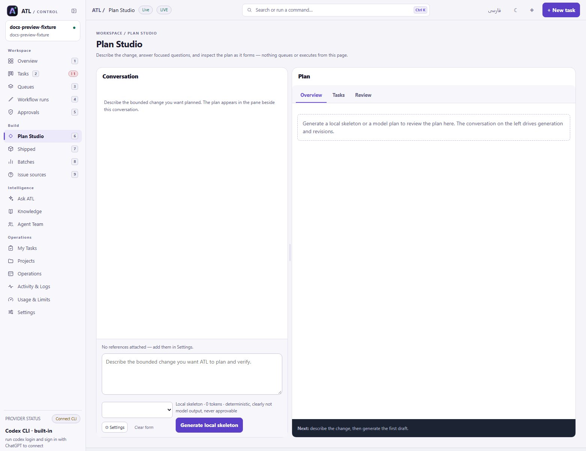

Plan Studio
Use Plan Studio when a request describes an outcome but lacks independently executable tasks. Planning proposes work; review and owner approval decide whether it can enter an execution queue.
The Studio is a conversational workspace: the conversation on the left drives generation and revisions, the plan on the right (Overview / Tasks / Review tabs) always shows the saved artifact. Nothing queues or executes from this page.
Prepare the request
Open Plan Studio with a request or imported issue. State the outcome, constraints, project, and acceptance examples in the composer — Enter adds a line, Ctrl/Cmd+Enter sends. Distinguish observed evidence from assumptions. Attach reference files from ⚙ Settings, and start with issue sources for external work.
Generate and review
- Inspect planning provider readiness (compact provider selector beside the composer; model, thinking effort, attachments, and skeleton mode live in ⚙ Settings).
- Generate plan sends one bounded provider call (or a free deterministic local skeleton) and the plan appears beside the conversation.
- Open Questions in the conversation whenever convenient. Numbered cards offer suggested answers and free text, show progress, and retain unfinished responses across closing, reopening, and reloading. Planning stays available while questions are open.
- Refine conversationally: with a draft open, the composer submits Update plan — one bounded refinement call that proposes a full candidate plan. The proposal lands in the Tasks tab as Proposed changes · based on rev N with added, changed, and removed task cards. Apply changes writes it against its originating revision (a manual edit in between makes it stale and refused with a reload-and-retry message; applying clears review readiness). Discard drops it. Manual edits and failed calls never touch the saved plan.
- Edit task cards directly (instructions, deliverables, dependencies, files, checks, skill reasons, worker) or ask about a single task from its card.
- Request separate provider review of the current artifact (accuracy or deep review).
- ATL checks submitted answers immediately, applies evidence-backed corrections or clearly labeled reversible assumptions, updates affected tasks, and requests an independent accuracy review. Review findings enter this same conversational correction flow. Each interaction allows one correction pass and one follow-up review; remaining concerns stay visible without stopping planning. Explicit preferences and original answers are retained. Provider failures retain the saved plan and answer and offer retry. Verify the source revision before approval.
- Approve the reviewed artifact to create an execution queue.
The persistent next-step control (header and plan-pane bar) offers questions, proposed changes, review, conversation, or queue approval. Accuracy concerns do not lock the conversation or editing. Approval and queueing still require a fresh passing review with consequential issues resolved. Reopening a saved draft restores its conversation and answer assessments; older drafts default to empty assessment and question-progress records.

Expected result: an approved plan creates bounded task packets in a queue. Editing after review invalidates its binding. A stale source revision blocks approval. A description or local preview is insufficient evidence. Below 960 px the workspace switches to Conversation/Plan tabs; the split is drag-resizable on desktop.
Publish deliberately
Inspect Publish destination, preview its GitHub or Azure destination, then confirm the exact publication. Local queue creation and remote issue creation are separate operations. Inspect existing publication mapping before retrying to avoid duplicates.
Choose the review depth
Plan Studio offers two review depths before approval. ATL accuracy review starts with one schema-gated model call. Findings can trigger one correction call and one independent follow-up accuracy review. Submitting an answer uses one correction call and one review call. EGM deep review runs the Elephant–Goldfish–Model review protocol: five independent stage reviewers plus a synthesizer, each a fresh single-shot call with no shared conversation. Its findings can enter the conversational correction flow; a follow-up accuracy review does not satisfy a policy that requires a fresh deep review.
The backend is selected in config/manager.json under egmReview:
"backend": "glm-goldfish"— the protocol natively through ATL's planning seam with any configured provider (for example GLM). Needs onlyenabled,backend, and the pinnedversionSha."backend": "codex"(default) — the real EGM plugin through a dedicated CODEX_HOME:codexHome,model, pinnedversionSha, the plugin installed, andcodex logincompleted for that home.
A missing or unusable configuration is refused explicitly before any spend. Every finding is bound to the reviewed artifact and evidence snapshot: a plan or evidence change invalidates the review, and a blocked or stale deep review keeps the approval gate shut — the same contract as the accuracy review. Failed, timed out, or incomplete deep reviews are recorded as failures with their raw run preserved beside the draft, never as a clean pass.
Resolve an approval block
Read answer feedback and review recommendations in the conversation. ATL handles bounded corrections automatically; revise an answer or retry its check when needed. Consequential unresolved issues, insufficient checks, stale sources, and legacy artifacts still affect approval readiness. See the plan contract for fields and bindings.
Source: runtime/lib/plan-studio.mjs, plan-model.mjs, plan-publish.mjs. Checks: verification/plan_contract_test.mjs, plan_studio_refine_test.mjs, plan_studio_refine_api_test.mjs, plan_studio_journey_test.mjs, and plan_publish_test.mjs.